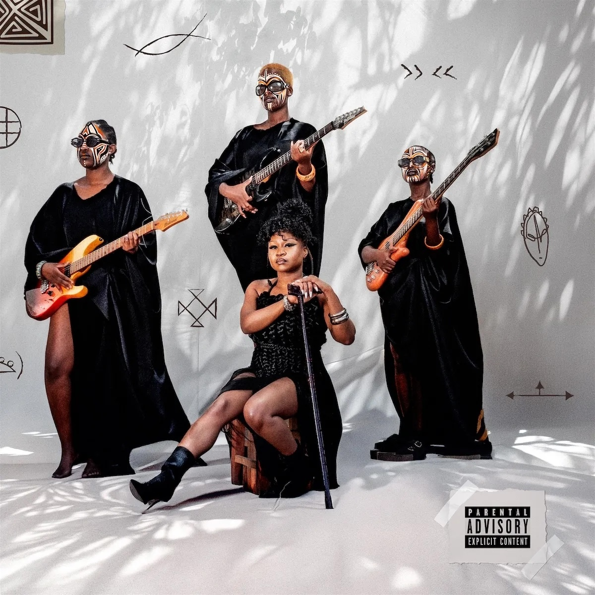
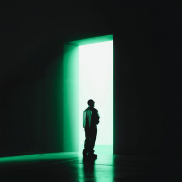
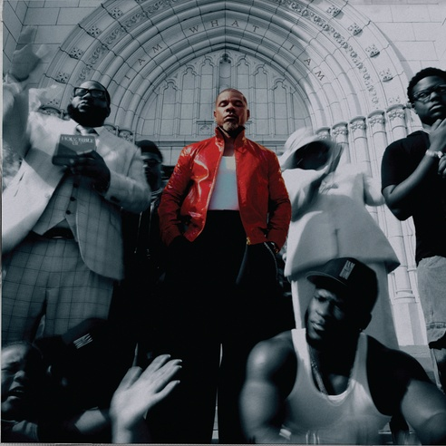
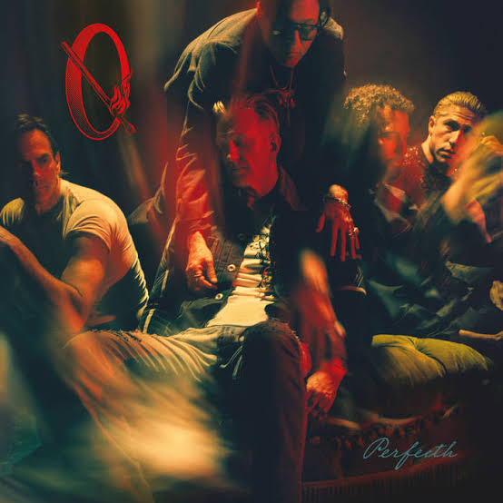

The Drop: nine new releases
Bensoul's Flight 420 takes off, Toxic Lyrikali lands an EP, and Dominic Fike, Sampa the Great and Blxckie all drop albums. Everything worth pressing play on from 29–30 October.
Kenya came through this week. Bensoul's new album and a new EP from Toxic Lyrikali lead a busy Friday that also brings a third album from Dominic Fike, Sampa the Great's return to Zamrock and Blxckie's second album. Here's everything that dropped, and where to start.
- 01
Flight 420
BensoulBensoul's new album is 13 tracks long and leans into a reggae-inspired sound, blended with the Afrosoul he's known for. He previewed it for fans at a listening session in Nairobi earlier this week.
The guest list runs deep: Scar Mkadinali on “NYR”, Spyro on “A Glass of Wine”, Watendawili on “Naenjoy”, Kasiva Mutua on “Bossa Nova”, Ywaya Tajiri on “Mariwana”, Mike Kayihura on “Nobody Wins, Nobody Loses”, Hornsphere on “RobinHood” and Savara on “Tears of Joy”. It closes on “Thank You”.
- 02
Abundance
Toxic LyrikaliToxic Lyrikali beat the Friday rush with a short, sharp project. Abundance is five tracks and about 15 minutes long: “Most Wanted”, “Mafia Boss”, “Time”, “Reminisce” and “Mbebe”.
- 03
How to Quit Smoking
Dominic FikeDominic Fike's third studio album arrives today. He's also heading to Europe on tour in February 2027, with dates including Berlin and Hamburg.
- 04

Nu Zamrock
Sampa the GreatThe Zambian rapper goes back to Zamrock, the rock sound that came out of Zambia in the 1970s, and pulls it into the present. The album is out on Loma Vista and executive produced by her long-time collaborator Cadenza.
It includes “Simon Says”, which came with a short prelude film, and “Can't Hold Us” with her sister Mwanjé.
- 05

YENA
BlxckieThe South African rapper's second album is 15 tracks long and lands five years after his debut, B4Now.
- 06

I Am What I Am
Kirk FranklinThe gospel giant's new album includes “This Time”, which reunites him with GloRilla.
- 07
Better Over Time
BigXthaPlugEighteen tracks from the Texas rapper, previewed by “LITE” with Belly Gang Kushington.
- 08
Everything Under the Sun
NickelbackNickelback's new album is out on Virgin Music Group, led by “Rattle the Cage” featuring guitarist John 5.
- 09

Perfecth
Queens of the Stone AgeThe rock heavyweights' ninth studio album, featuring the single “Insignificant Other”.
Also out this weekThe singles
Gracie Abrams, “Here You Come, There You Go” (Thursday 29 October). A new song ahead of Daughter From Hell (Deluxe), out 20 November, and her SNL return on 31 October.
Justice and Gesaffelstein, “Pusher” (Thursday 29 October). The French duo's first track with Gesaffelstein, from Justice's score for Grand Theft Auto VI.
Coi Leray featuring Lucky Daye, “Milk N Cookies” (Friday 30 October). From Epic's holiday compilation Holiday Radio.
Sam Smith and Jacob Lusk, “My Guy” (Friday 30 October). A new version of Sam Smith's June single.
Sources
- Apple Music: Flight 420 by Bensoul
- Bensoul on X: Flight 420 release date
- allAfrica: Bensoul's new album Flight 420
- Capital FM: Inside the Flight 420 listening session
- Apple Music: Abundance EP by Toxic Lyrikali
- Ad-hoc News: Dominic Fike's third album on 30 October
- Stereogum: Dominic Fike announces How to Quit Smoking
- regioactive: Dominic Fike in Berlin, February 2027
- Hamburg Tourism: Dominic Fike in Europe
- Stereogum: Sampa the Great announces Nu Zamrock
- OkayAfrica: Sampa the Great announces Nu Zamrock
- Twntythree: Can't Hold Us ft. Mwanje
- Apple Music: YENA by Blxckie
- SlikourOnLife: Blxckie ahead of YENA
- Jesus Freak Hideout: Kirk Franklin & GloRilla, This Time
- Rapzilla: Kirk Franklin reveals I Am What I Am
- TheGrio: Kirk Franklin & GloRilla reunite
- Ratings Game Music: BigXthaPlug's Better Over Time
- Sneakz & Beatz: Better Over Time, 18 tracks
- KNAC: Nickelback's new album out 30 October
- Blabbermouth: Nickelback, Rattle the Cage featuring John 5
- Loudwire: Queens of the Stone Age, Perfecth
- Official Charts: QOTSA announce ninth album Perfecth
- That Eric Alper: Gracie Abrams, Here You Come, There You Go
- NME: Justice and Gesaffelstein, Pusher
- Beatportal: Justice and Gesaffelstein's first collab
- That Grape Juice: Coi Leray, Milk N' Cookies
- Official Charts: New releases
- Ratings Game Music: New Music Friday, 30 October